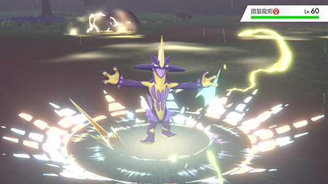
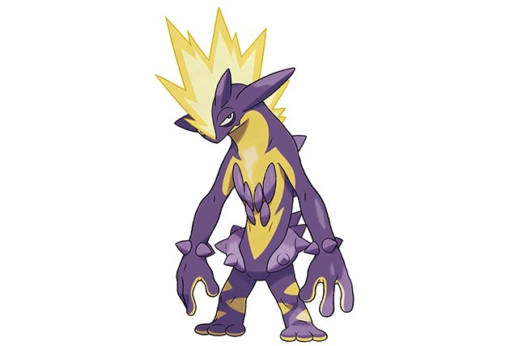
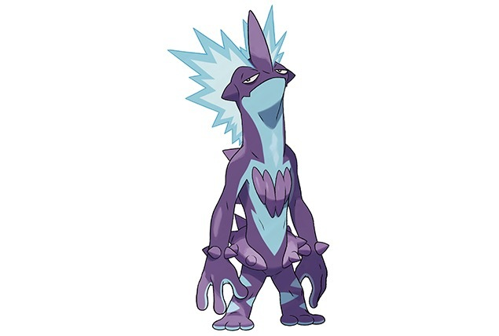
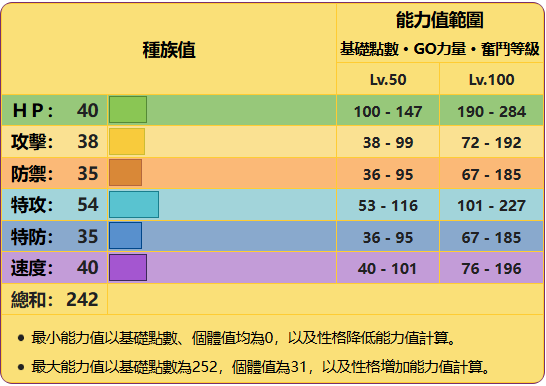

技能與特性
戰顫弦蠑螈擁有毒系與電系的強大技能，包括「毒針」和「打雷」等常用攻擊。
它的專屬技能「酸性搖滾」可以對對手造成中毒效果，是一項音樂性十足的技能。
此外，它的特性「正電」和「負電」在雙打對戰中可以強化同伴的攻擊力，讓它在團隊作戰中非常實用。
特徵說明
高調的樣子的顫弦蠑螈是個對自己信心十足的急性子。
只要與人類或其他寶可夢對上視線，就會氣勢洶洶地接近對方，不管對手是誰都會毫不示弱地發起攻擊。
它會大口喝下渾濁的水，吸收其中所含的毒素，通過分解攝入體內的毒素來生成電力。
在此過程中，胸部會受到強烈刺激，當它一邊排出帶毒的汗水一邊用力抓撓胸部的突起物來製造電力時，四周會響起如同吉他演奏般的聲音。
彈奏時釋放出的電擊可輕易超過15000伏特。
低調的樣子的顫弦蠑螈對自己的能力評價甚高，常常做出些自私任性的行為，任何對手都不放在眼裡。
遇到人類或其他寶可夢時雖不主動發起攻擊，但會挑釁對方以引起爭鬥。
它面對任何對手都能鎮定自若，它那一臉慵懶地挑釁著對手的風格受到了不少年輕人的憧憬。
它的發電器官長在胸部，會大口喝下淤水，並在體內製造電氣，發電時會發出節拍精準的電貝斯演奏般的聲音。
當它彈奏長在胸部的發電器官製造電力時，其電壓據說高達15000伏特，極其危險。
種族值
配招參考影片
【寶可夢朱紫】顫弦蠑螈疊加所有強化之後打出_最強絕招_爆音波威力爆錶！